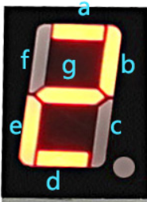

El display de 7 segmentos es un dispositivo de salida compuesto por siete LEDs dispuestos en forma de número “8” y, en algunos casos, un punto decimal. Encendiendo diferentes combinaciones de segmentos, es posible representar dígitos del 0 al 9 e incluso algunas letras.
-
Tipos de displays
Existen dos tipos principales:
- Cátodo común: todos los cátodos de los LEDs están conectados a un punto común a tierra (GND).
- Ánodo común: todos los ánodos están conectados a un punto común positivo (VCC).
En este curso, utilizaremos displays de cátodo común, donde cada segmento se enciende aplicando un nivel lógico alto en su pin correspondiente.
-
Segmentos y codificación
Los segmentos se nombran con las letras a, b, c, d, e, f, g. Cada dígito se representa encendiendo una combinación específica de estos segmentos. Por ejemplo:
- 0 -> segmentos a, b, c, d, e, f encendidos; g apagado.
- 2 -> segmentos a, b, d, e, g encendidos.

El encendido de cada segmento puede controlarse manualmente desde el microcontrolador o utilizando una tabla de codificación en el programa:
a b c d e f g Digito 1 1 1 1 1 1 0 0 0 1 1 0 0 0 0 1 1 1 0 1 1 0 1 2 1 1 1 1 0 0 1 3 0 1 1 0 0 1 1 4 1 0 1 1 0 1 1 5 1 0 1 1 1 1 1 6 1 1 1 0 0 0 0 7 1 1 1 1 1 1 1 8 1 1 1 0 0 1 1 9
-
Conexión con el ESP32
Para controlar un display de 7 segmentos:
- Cada segmento se conecta a un pin GPIO configurado como salida digital.
- Si el display es múltiple (varios dígitos), se emplea multiplexado, activando un dígito a la vez de forma rápida para que parezca que todos están encendidos simultáneamente.
-
Uso en MicroPython
El control se realiza configurando los GPIO con la librería machine y activando la combinación de segmentos necesaria.
Ejemplo de encendido de un dígito:
from machine import Pin a = Pin(16, Pin.OUT) b = Pin(17, Pin.OUT) # Configurar otros pines... a.value(1) # Encender segmento a b.value(1) # Encender segmento b
-
Aplicaciones
Los displays de 7 segmentos se utilizan para:
- Mostrar valores numéricos de sensores.
- Contadores y temporizadores.
- Indicadores en sistemas de control y medición.